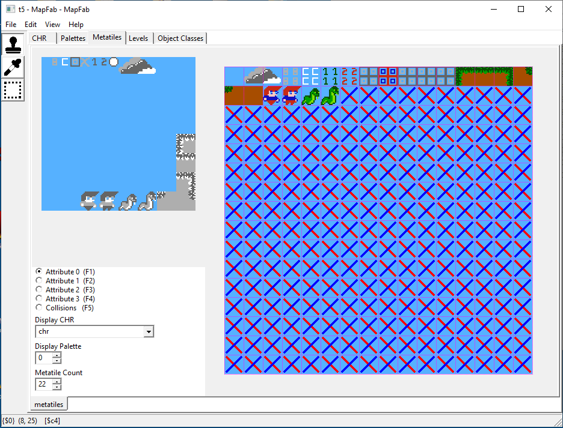
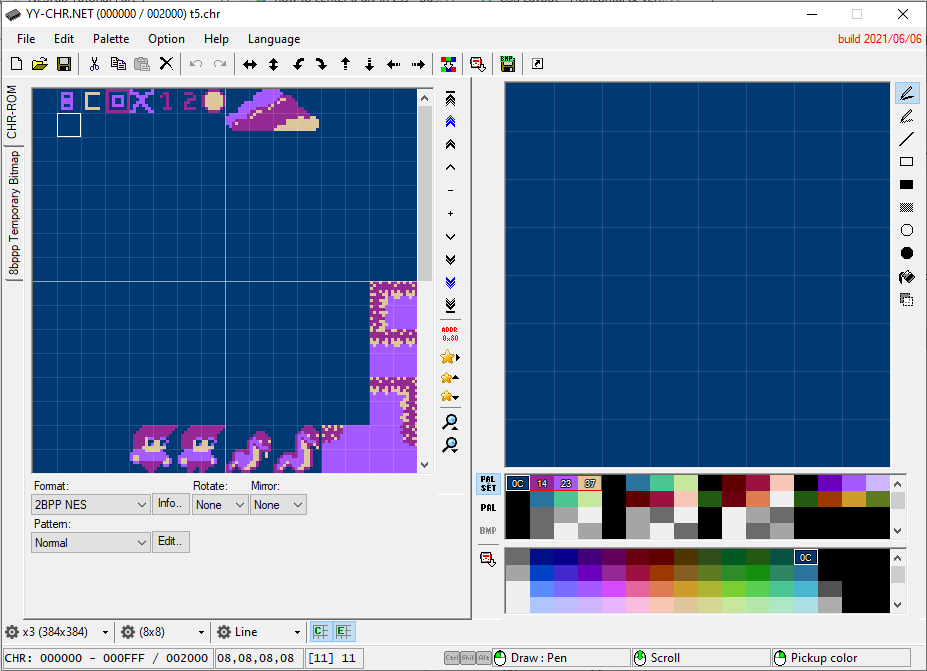

NESFab Tutorial Part 4
Making a game. Player movement.
This fourth code I want to show you is an example of how to make a game using NESFab. Here you can download the example.
Like in the past examples, it loads a level made with YY-CHR english and Mapfab, and displays a 16x16 pixels player character you can move freely through the scene. It uses the same past macros used in the earlier examples to load the data in ROM:
mapfab(raw, "t5.mapfab", "chr", "palette", "metatiles", "level")
ct UU x_window_min=50 // the player character will move within these x coords without causing x scroll
ct UU x_window_max=206
ct UU player_x_move_inc=1 // the char will move these many pixels in x at a time
ct UU player_char_width=16
ct UU player_char_height=16
ct UU player_initial_x=128 // initial player coords
ct UU player_initial_y=120
ct U pass_through_mt=10 // metatiles we can pass through
ct U num_jump_increment=1 // number of pixels the player jumps at every frame
ct U num_jump_values=30 // size of the screen pixels the player will move up in a frame (jump_values)
ct U falling_rate_px=2 // pixels the player will fall in a single frame
vars /game_vars
CCC/levels lvl1_mt_map // level 1 metatile map and its tiles correspondence
CC/metatiles mt_nw
CC/metatiles mt_ne
CC/metatiles mt_sw
CC/metatiles mt_se
CC/metatiles mt_attr
UU my_x_scroll=0 // this points to the current h. scroll value
UU maximum_x // this will point to the map maximum x scroll value
UU scr_bg_update_base_addr // addrs where to copy data during NMI
UU scr_attr_bg_update_base_addr
Bool scr_bg_update_needed=false
U[30] scroll_tiles // The data we'll upload to the PPU during NMI.
U[8] scroll_attrs
UU player_window_x=player_initial_x // player character coords locally in screen (not inside map)
UU player_map_x=player_initial_x // player char coordinates globally (in the map)
UU player_y=player_initial_y // only one global y coordinate for the player
//
Bool is_player_jumping=false
U count_frames_jumping=0
Bool is_player_on_ground=false
U[num_jump_values] jump_values = U[num_jump_values](4, 4, 3, 3, 3, 3, 3, 3, 3, 2, 2, 2, 2, 2, 2, 2, 2, 1, 1, 1, 1, 1, 0, 0, 0, 0, 0, 0, 0, 0)
U[8] chr_sprt_table = U[8](230, 231, 246, 247, 228, 229, 244, 245) // chr table of player sprites 1 & 2
U which_player_sprite_show = 0
Most of the constants and variables are self-explanatory, the most important are player_map_x, which contains the player x position in the whole scenary and player_y, which has the y position. Other interesting variables are jump_values that contains the vertical values to add in a jump and chr_sprt_table that contains the sprite numbers to show the player.
Player movement. How it works.
In the Mapfab file, when we built the metatiles, we consider the lower numbered ones (0..10) the transparent ones, that is, "the air", which the player can pass through. The rest are "solid" and the player can't pass through them.
After that, we only need to check at which metatile of the background the player is and check if it's solid or not. This checking is mostly done in the move_player() function:
// this function calculates the movements of the player character
fn move_player()
// calculate wich sprite to show to simulate player walking
if (is_player_on_ground)
which_player_sprite_show=((player_map_x.a>>4)&1)
else
which_player_sprite_show=0
// check if the player has a ground underneath
if (is_ground_close(1))
is_player_jumping=false
is_player_on_ground=true
// check if the player is on the air
if (is_player_on_the_air())
is_player_on_ground=false
// check if player touched a wall while jumping
if (did_touch_wall_up())
is_player_jumping=false
// Check if the player can move left. It also manages horizontal scroll window
if pads[0].held & BUTTON_LEFT
if (!did_touch_wall_left())
//
if (player_window_x > x_window_min)
player_window_x-=player_x_move_inc
else
if (my_x_scroll >= player_x_move_inc)
my_x_scroll-=player_x_move_inc
else
my_x_scroll=0
if (player_window_x >= player_x_move_inc)
player_window_x-=player_x_move_inc
else
player_window_x=0
//
calc_left_scr_bg(my_x_scroll)
//
player_map_x=my_x_scroll // calculate player x coord in map
player_map_x+=player_window_x
// Check if the player can move right. It also manages horizontal scroll window
if pads[0].held & BUTTON_RIGHT
if (!did_touch_wall_right())
//
if ((player_window_x+player_char_width) < x_window_max)
player_window_x+=player_x_move_inc
else
if ((my_x_scroll+player_x_move_inc) <= maximum_x)
my_x_scroll+=player_x_move_inc
else
my_x_scroll=maximum_x
if ((player_window_x+player_x_move_inc+player_char_width) <= 255)
player_window_x+=player_x_move_inc
else
player_window_x=256-player_char_width
//
calc_right_scr_bg(my_x_scroll)
//
player_map_x=my_x_scroll // calculate player x coord in map
player_map_x+=player_window_x
// check if player pressed jump button
if ( (pads[0].pressed & BUTTON_A) && is_player_on_ground && (!did_touch_wall_up()) )
count_frames_jumping=0
is_player_jumping=true
is_player_on_ground=false
// simulate gravity (player falling slowly)
if ( (!is_player_on_ground) && (!is_player_jumping) )
if (is_ground_close(falling_rate_px))
player_y+=1
else
player_y+=falling_rate_px
//
// simulate jump
if (is_player_jumping)
player_y-=jump_values[count_frames_jumping]
count_frames_jumping+=1
// check if jumping should stop
if (count_frames_jumping >= num_jump_values)
is_player_jumping=false
Note the player can move without scrolling between screen coordinates defined in x_window_min and x_window_max.

fn update_sprites()
// Our stack index into OAM:
U i = 0
// Push sprites
// calculate player character on screen
U pcx=player_window_x.a
U pcy=player_y.a
// draw character sprites
set_oam_x(i, pcx) // x-position
set_oam_y(i, pcy) // y-position
set_oam_p(i, chr_sprt_table[(which_player_sprite_show<<2)]) // tile
set_oam_a(i, 0) // options
i += 4
set_oam_x(i, pcx+8) // x-position
set_oam_y(i, pcy) // y-position
set_oam_p(i, chr_sprt_table[(which_player_sprite_show<<2)+1]) // tile
set_oam_a(i, 0) // options
i += 4
set_oam_x(i, pcx) // x-position
set_oam_y(i, pcy+8) // y-position
set_oam_p(i, chr_sprt_table[(which_player_sprite_show<<2)+2]) // tile
set_oam_a(i, 0) // options
i += 4
set_oam_x(i, pcx+8) // x-position
set_oam_y(i, pcy+8) // y-position
set_oam_p(i, chr_sprt_table[(which_player_sprite_show<<2)+3]) // tile
set_oam_a(i, 0) // options
i += 4
// Clear the remainder of OAM
hide_oam(i)
Finally, the animation of walking is made using two sets of sprites which are selected depending on the x coordinate we are at. chr_sprt_table contains the two sets of characters and which_player_sprite_show selects between them.